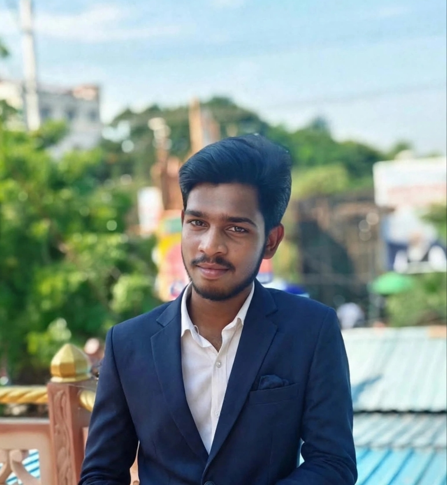

I am a motivated second-year B.Tech student with a strong interest in front-end development and web technologies. I have knowledge of HTML, CSS, JavaScript, Python, and basic Java, and I enjoy creating responsive, accessible, and user-friendly web pages. I am eager to explore new technologies, learn AI-driven development workflows, and use AI tools responsibly to improve coding, debugging, and problem-solving. I believe in continuous learning, improving my technical skills, and building practical projects that solve real-world problems. My goal is to grow as a developer and contribute to creating innovative and effective digital solutions.

Hello! I am Rohith , a motivated and enthusiastic second-year B.Tech
student at Godavari Global University, Rajahmundry, with a strong
interest in software development and modern web technologies. I enjoy
exploring new technologies, learning new concepts, and developing my
technical skills through continuous practice and hands-on experience.
I have knowledge of HTML, CSS, JavaScript, DBMS, Python, and basic Java
and I am particularly interested in front-end development. I enjoy
creating responsive, accessible, and user-friendly web pages that
provide a smooth and engaging user experience. I am also interested in
exploring AI-driven development workflows and learning how AI tools
can support coding, debugging, and problem-solving.
One of my key strengths is my willingness to learn and adapt to new
technologies. I believe that continuous learning and consistent
effort are essential for personal and professional growth. I approach
challenges with a positive attitude and see them as opportunities to
improve my knowledge, develop new skills, and find better solutions.
I
I also value good communication, teamwork, and collaboration. I
enjoy sharing ideas, listening to different perspectives, learning
from others, and working together to achieve common goals. I believe
effective communication and mutual support are important for building
a productive team and successfully completing tasks.
As an aspiring
software developer, my goal is to strengthen my programming skills,
gain practical experience, and work on projects that address
real-world problems. I am always eager to take on new challenges,
learn from feedback, and turn my ideas into meaningful digital
solutions.
I look forward to growing as a developer, exploring
emerging technologies, and contributing to innovative projects while
continuously improving both my technical and interpersonal skills.
Here are some of my projects:
Godavari Global University,Rajamahendhravaram
Start year:2025 | Currenlty PersuingGovernment Junior College ,Rajamahendhravaram
Graduated : 2023-2025